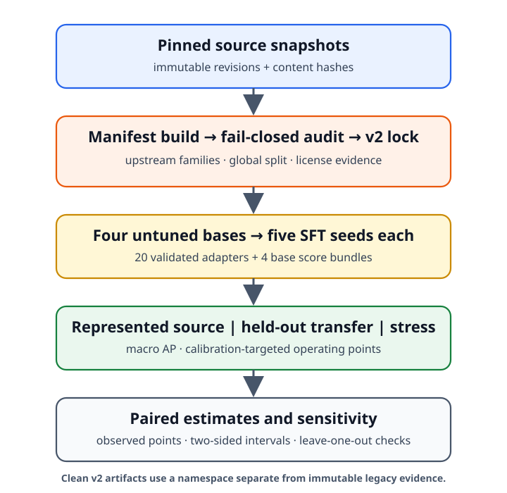

The Benchmark Chooses the Winner: Measuring Fine-Tuning Specialization Across Safety-Guard Benchmarks
Small language models are increasingly adapted into binary prompt-safety guards, but improvement on benchmark sources represented during training does not establish transfer to other datasets. We report a clean-v2 execution comparing four untuned checkpoints (1.5B–4B parameters) with five LoRA-SFT seeds per checkpoint. The source revisions, training rows, semantic classification instruction, LoRA capacity, evaluation rows, and analysis are lock-bound; rendered chat serialization is model-specific. We separate represented-source tests from four dataset-held-out transfer benchmarks and report macro average precision (AP), per-source effects, and calibration-only operating points.
The fixed-panel base-to-SFT changes are \(+0.3234\) in represented-source macro AP (95% two-sided paired-bootstrap interval \([+0.2647,+0.3690]\)) and \(-0.0589\) in transfer macro AP (\([-0.0837,-0.0321]\)). Transfer is heterogeneous across checkpoints, but every leave-one-checkpoint-out and leave-one-transfer-benchmark-out sensitivity estimate remains negative. At calibration-targeted thresholds, benchmark-macro transfer FPR rises from 8.1% (base) to 15.5% (SFT), while pooled-negative FPR rises from 4.3% to 17.0%; HarmBench recall falls from 78.0% to 60.0%.
Prior work has established policy overfitting, calibration sensitivity, and safety degradation after fine-tuning. Our contribution is narrower: a same-checkpoint, same-training-manifest characterization of how compact prompt guards move across benchmark sources. Conditional on these four checkpoints and seven fixed AP datasets, the estimates are consistent with in-source specialization, not a general moderation upgrade. The v2 rerun repairs execution provenance and preprocessing defects found in the archived v1 artifact, but prior development inspected part of the transfer cohort and informed the protocol. We therefore treat the result as retrospective and estimation-only; confirmatory use requires a prospectively locked analysis on a genuinely uninspected cohort or benchmark.
1 Introduction
Teams increasingly convert a general instruction model into a safety guard with a short parameter-efficient fine-tune, then report the adapted guard’s score on a public benchmark suite. A post-adaptation leaderboard number, however, hides the quantity a practitioner actually needs: what changed relative to the same checkpoint before adaptation, and whether that change transfers to datasets not represented during training. Because an adapted guard is often compared only against other models, a gain on represented benchmark sources can be mistaken for broader discrimination or policy agreement.
This paper asks one question: what does LoRA-SFT add beyond the untuned base model, and does that gain transfer to evaluation datasets whose rows were not used for SFT? We retrospectively analyze a controlled, same-checkpoint, same-training-manifest, multi-seed run on a fixed four-checkpoint panel (Qwen2.5-1.5B, SmolLM2-1.7B, SmolLM3-3B, Qwen3-4B) and one frozen LoRA-SFT recipe, comparing every adapted guard against its own untuned base across two evaluation regimes: benchmark sources represented during training and dataset-held-out benchmarks whose rows were withheld from SFT.
We organize the analysis around the following deliberately panel-limited question.
For a fixed four-checkpoint panel and one frozen LoRA-SFT recipe, does guard adaptation change discrimination differently on represented-source and dataset-held-out tests?
The design and analysis were not publicly preregistered and were informed by earlier development, so the clean-v2 run is analyzed retrospectively. We therefore report estimates, intervals, heterogeneity, and sensitivity checks without confirmatory rejection language.
Scope.
The study is deliberately narrow: English input-prompt classification, binary safe/unsafe decision-token scoring, small instruction models from 1.5B to 4B parameters, one fixed LoRA-SFT recipe, three represented-source datasets, four dataset-held-out transfer benchmarks, two single-class stress sets, and a fixed, purposively chosen four-checkpoint panel. It is not a guardrail leaderboard, an objective comparison, an ensembling study, a fairness audit, a frontier-API parity or latency study, or a domain-compliance case study; those questions — including the mortgage-compliance case study — are out of scope here and are treated in separate work. Response, tool-call, and full-dialogue moderation, arbitrary unseen policies, production traffic, and universal claims about fine-tuning are likewise out of scope.
1.1 Contributions
The paper makes exactly three contributions.
Controlled base-to-guard comparison. For each checkpoint, we compare the untuned base with five SFT adapters on identical evaluation rows, semantic instructions, score definitions, and metrics, isolating the within-checkpoint change in this executed run.
Fixed-panel transfer characterization. We estimate represented-source and dataset-held-out changes separately, report per-base and per-benchmark heterogeneity, and restrict every conclusion to the named four-checkpoint panel and frozen recipe.
Auditable measurement package. We release a text-free public manifest index, source revisions, content hashes, seed-level results, keyed scores, paired intervals, generated tables and figures, and an executable cached-analysis path. Raw third-party rows remain local according to their licenses.
Operating-point evaluation (4.3) is supporting methodology, not a contribution: it is a secondary deployment diagnostic and does not provide a distribution-free production guarantee.
1.2 Research questions
The single question above is operationalized as four research questions.
- RQ1 (represented-source effect).
-
For the fixed four-checkpoint panel, how does a common LoRA-SFT recipe change macro average precision on benchmark sources represented during training?
- RQ2 (benchmark-transfer effect).
-
How does the same adaptation change macro average precision on dataset-held-out transfer benchmarks?
- RQ3 (heterogeneity).
-
Are the represented-source and transfer changes stable across checkpoints and evaluation datasets, or are they concentrated in particular bases and benchmarks?
- RQ4 (deployment sensitivity).
-
What TPR/FPR trade-off do the base and SFT systems realize when thresholds are selected on calibration data at a nominal 5% pooled-negative FPR target?
RQ4 is descriptive and secondary: it does not provide a distribution-free production guarantee, and failure to obtain a feasible threshold under the prespecified bound is a reportable outcome rather than grounds for selecting a threshold on test data.
3 Controlled Study Design
Figure 1 summarizes the clean-v2 execution design. Pinned source snapshots are compiled into manifests, independently audited, and bound to a clean-source v2 lock before model execution; four bases are each adapted with five SFT seeds; the base and adapted guards are scored on represented-source, transfer, and stress manifests; and paired deltas feed estimation and sensitivity analyses. Training does not read evaluation rows. Manifest construction, audit, threshold fitting on calibration data, and analysis necessarily read their corresponding labels. The clean execution contract repairs the legacy chain of custody, but the study remains a retrospective, precision-focused analysis because its protocol and benchmark choices were informed by prior development.

3.1 Prompt-safety task and label mapping
The guard is a binary classifier that emits a single-token verdict,
safe or unsafe. A prompt is
unsafe when the source annotation maps it to harmful,
jailbreak, prompt-injection, or policy-violating content; a labeled
attempt need not have succeeded against a target model. Each source’s
native label is mapped by a fixed rule: ToxicChat (Lin et al. 2023)
toxicity\(=1\!\to\!\)unsafe;
deepset/prompt-injections label\(=1\!\to\!\)unsafe;
jailbreak-classification type beginning
jailbreak\(\to\!\)unsafe;
JailbreakBench (Chao et al. 2024)
harmful/benign splits; XSTest (Röttger et al. 2024) contrast
prompts\(\to\!\)unsafe; WildGuardTest
(Han et al.
2024) prompt_harm_label; WildJailbreak (Jiang et al.
2024) integer label; OR-Bench-Hard (Cui et al. 2025) benign portion
(safe); and HarmBench (Mazeika et al. 2024) behaviors
(unsafe). These heterogeneous mappings do not define one universal
moderation policy.
3.2 Guard formulation: a single-token logprob head
The guard treats safety classification as a single next-token
prediction. A prompt \(x\) is wrapped
in one versioned instruction template shared across every base and seed,
and the model is asked for a one-word verdict. Rather than sampling
text, we read the last-position logits and restrict attention to the two
verdict tokens. Let \(z_{\text{safe}}(x,t)\) and \(z_{\text{unsafe}}(x,t)\) be those logits at
the final prompt position \(t\). The
stored canonical score is the logit difference \[s(x) = z_{\text{unsafe}}(x,t) - z_{\text{safe}}(x,t),\] and the derived probability is the two-way
softmax \[p(\text{unsafe}\mid x) =
\frac{\exp(z_{\text{unsafe}})}{\exp(z_{\text{safe}}) +
\exp(z_{\text{unsafe}})}.\] Raw safe/unsafe logits
are the canonical stored values; probabilities and temperature-scaled
values are derived from them. Generated verdict text is never used as
the primary score. For each checkpoint we verify that the decision
tokens are distinct single tokens under a fixed convention
(leading-space " safe"/" unsafe" first,
no-leading-space fallback), and store token IDs, token strings,
truncation state, truncation strategy, and scored/original token counts.
The semantic system instruction is shared, but model-specific chat
templates produce three distinct rendered-template hashes across the
four checkpoints. The v2 runner budgets and truncates user content
before final rendering, then asserts that the complete classification
instruction and wrapper remain. The archived v1 artifact instead
left-truncated complete renderings and motivates this contract check (§5).
3.3 Training manifest and exclusions
Training reads one frozen 1,200-row manifest and never
resamples live datasets during a run. It draws 400 rows
each from three represented sources — ToxicChat,
Prompt-Injections, and Jailbreak-Classification — with 200 safe
and 200 unsafe rows per source, selected by a SHA-256 hash rank
salted with data_seed and shared as one fixed row order
across every checkpoint and training seed. At effective batch size 4,
1,200 rows produce exactly 300 optimizer updates for one
complete exposure.
BeaverTails and OR-Bench are excluded from training.
BeaverTails’ is_safe annotation labels the prompt–response
interaction rather than the prompt alone, and OR-Bench is reserved for
the benign stress set and shares an evaluation family; including either
would confound the prompt-only, dataset-held-out design. The study uses
the non-commercial academic data branch (ToxicChat is CC BY-NC 4.0), so
any released adapter is marked non-commercial. We do not redistribute
third-party raw text; the release provides pinned identifiers,
revisions, and content hashes.
Decontamination audit. The v2 builder preserves authoritative upstream conversation/pair/scenario identifiers, adds deterministic character 5-gram MinHash edges, constructs connected components before splitting represented-source calibration and ID rows, and fails closed if any family crosses train/evaluation or calibration/any reported test or stress boundary. It connects all 36 selected JailbreakBench matched-index pairs and all 58 selected XSTest safe/unsafe pairs. The independent v2 audit passed all 24 hard assertions covering source exclusions, schema and row identity, exact/conflicting-label overlap, source revisions and content hashes, selection provenance, family disjointness, licenses, and deterministic near-duplicate dispositions. The locked manifests contain 1,200 training, 451 calibration, 677 represented-source ID, 1,580 transfer, 400 OR-Bench, and 200 HarmBench rows. The archived v1 audit’s missing pair links and two calibration/ID-crossing families motivated this rebuild; they do not define the v2 family graph.
| Source (Hugging Face) | Native label origin | Role | Count (target) | License |
|---|---|---|---|---|
lmsys/toxic-chat |
prompt toxicity | train \(+\) calibration/ID | 400 train (200:200) | CC BY-NC 4.0 |
deepset/prompt-injections |
prompt injection | train \(+\) calibration/ID | 400 train (200:200) | metadata conflict\(^\dagger\) |
jackhhao/jailbreak-classification |
prompt jailbreak | train \(+\) calibration/ID | 400 train (200:200) | Apache-2.0 |
JailbreakBench/JBB-Behaviors |
harmful/benign split | transfer (test only) | 120 (60:60) | MIT |
natolambert/xstest-v2-copy |
contrast prompt | transfer (test only) | 240 (120:120) | CC BY 4.0 |
allenai/wildguardmix |
prompt harm label | transfer (test only) | 800 (400:400) | ODC-BY \(+\) AI2 |
allenai/wildjailbreak |
adversarial label | transfer (test only) | 420 (210:210) | ODC-BY \(+\) AI2 |
bench-llm/or-bench
(hard-1k) |
benign over-refusal | stress: benign FPR only | 400 (0:400) | CC BY 4.0 |
walledai/HarmBench |
harmful | stress: recall only | 200 (200:0) | MIT |
\(^\dagger\)At the pinned Prompt-Injections revision, top-level card metadata says Apache-2.0 while nested dataset metadata says CC BY 4.0; the public index records the conflict rather than silently choosing one.
3.4 Model panel and frozen SFT recipe
The estimand is a fixed, purposively chosen four-checkpoint panel; we do not bootstrap model identities or infer over model families. All checkpoints, revisions, and the LoRA-SFT recipe are in Table 2. Each base is adapted with five training seeds (42–46) sharing data-order seed 42, giving 20 adapters; four untuned bases are scored once and reused (\(4+20=24\) model bundles). The executed recipe uses completion-only loss on the verdict and appended EOS tokens, LoRA \(r{=}32\), \(\alpha{=}64\), dropout \(0.05\) on q/k/v/o/gate/up/down projections, 300 steps, learning rate \(2\times10^{-4}\) with cosine schedule and 0.03 warmup, effective batch 4, and maximum sequence length 1,024. V2 preprocessing truncates user content within a model-specific token budget while preserving the complete classification instruction and records the strategy and token counts.
| Checkpoint | Params | Revision (pinned) | Decision tokens | Tokens seen / wall time |
|---|---|---|---|---|
| Qwen/Qwen2.5-1.5B-Instruct | 1.5B | 989aa79…71aa306 |
{ safe, unsafe } single-token | 215k / 8.7 min |
| HuggingFaceTB/SmolLM2-1.7B-Instruct | 1.7B | 31b70e2…46d38674 |
{ safe, unsafe } single-token | 226k / 7.4 min |
| HuggingFaceTB/SmolLM3-3B | 3B | a07cc9a…335b0ac1 |
{ safe, unsafe } single-token | 260k / 11.3 min |
| Qwen/Qwen3-4B | 4B | 1cfa9a7…03b3df60c |
{ safe, unsafe } single-token | 220k / 12.6 min |
| Recipe (all cells): completion-only SFT (verdict \(+\) EOS); LoRA \(r{=}32\), \(\alpha{=}64\), dropout \(0.05\); q,k,v,o,gate,up,down; | ||||
| 300 steps; lr \(2\times10^{-4}\) cosine, warmup 0.03; effective batch 4; max len 1,024; seeds 42–46; data-order seed 42. | ||||
3.5 Evaluation regimes
We use precise regime terminology and avoid “fair,” “uncontaminated,” and “source-family OOD.” Three regimes partition evaluation.
Represented-source = {ToxicChat, Prompt-Injections, Jailbreak-Classification} test rows, held back from training. These measure discrimination on sources represented during training.
Dataset-held-out transfer = {JailbreakBench, XSTest, WildGuardTest, WildJailbreak}, whose rows were withheld from SFT. These benchmarks use heterogeneous native label constructs and may share conceptual or data-generation lineage, so we study dataset-held-out benchmark transfer, not source-family independence or a single fixed policy.
Stress = {OR-Bench-Hard benign portion (false-positive rate only), HarmBench (recall only)}. These are single-class sets: no AP or AUROC is computed on stress data, and the confounded OR-Bench-Hard benign/unsafe hybrid is never used for AP.
The primary metric is benchmark-macro average precision within each regime; the secondary metric is the calibration-targeted 5% FPR operating point (4.3).
3.6 Estimands and statistical protocol
For regime \(R\), checkpoint \(b\), and training seed \(r\), the per-regime metric is the macro
average precision over that regime’s benchmarks, \[M_R(b,r) = \frac{1}{|K_R|}\sum_{k\in K_R} \mathrm{AP}_k(b,r),\] computed with the tie-aware, non-interpolated
scikit-learn definition. The base-to-SFT change for a cell
is \[\Delta_R(b,r) = M_R(\mathrm{SFT}_{b,r}) - M_R(\mathrm{base}_b),\] and the fixed-panel aggregate averages the four
checkpoint deltas without resampling checkpoint identities, \[\bar\Delta_R = \frac{1}{4}\sum_b\Big[\tfrac{1}{5}\textstyle\sum_r
M_R(\mathrm{SFT}_{b,r}) - M_R(\mathrm{base}_b)\Big].\] The primary result is the joint vector \(\theta = (\bar\Delta_{\text{represented}},
\bar\Delta_{\text{transfer}})\); we retain both dimensions and
visualize them as a plane rather than collapsing them into a scalar
“specialization score.”
Uncertainty. We use 10,000 paired
hierarchical-bootstrap replicates (RNG seed 20260712): checkpoint
identities remain fixed, SFT seed indices are resampled within
checkpoint, and one Poisson(1) weight is applied per recorded global
family_id. Because training rows and order are fixed, seed
variation reflects initialization, dropout, and execution
nondeterminism, not training-sample or order uncertainty. The v2 family
graph supplies the shared weights for every recorded upstream and
MinHash-linked component. The intervals are conditional on the named
checkpoints, constructed evaluation subsets, recorded family graph, and
datasets; they do not support inference to a population of model
families or benchmarks. Leave-one-transfer-benchmark-out and
leave-one-base-out values are deterministic sensitivity analyses, not
resampling or population inference.
Analysis mode. The clean v2 lock records
analysis_mode as precision_focused, with no
power report or seed-count decision. Accordingly, the joint
represented/transfer result remains descriptive: we report observed
fixed-panel points, two-sided bootstrap intervals, and leave-one-out
sensitivities, but no formal intersection–union rejection, Holm
correction, bootstrap-derived \(p\)-value, or pass/fail claim gate. Clean
execution provenance does not retroactively make the study confirmatory.
A future confirmatory analysis would additionally require a
prospectively registered protocol, a justified null-calibrated test, and
a genuinely uninspected cohort or benchmark.
4 Results
Tables, figures, JSON, and CSV outputs are generated from the
lock-bound v2 scores under
artifacts/paper_a_sft_v2/analysis; the repository’s paper
target verifies that its copied table/figure files match those outputs.
Narrative aggregate, operating-point, and stress values are generated as
macros from the same analysis. The immutable v1 scores remain available
only through the separately labeled legacy-compatibility path.
4.1 Primary fixed-panel result (RQ1, RQ2)
Table 3 reports, per base, the untuned-base and mean-SFT macro AP in each regime, the observed paired base-to-SFT delta with a two-sided 95% bootstrap interval, and the fixed-panel aggregate \(\theta = (\bar\Delta_{\text{represented}}, \bar\Delta_{\text{transfer}})\). Per-seed deltas are in Table 5.
On the constructed evaluation subsets, the represented-source point estimate is positive for every checkpoint. Mean SFT macro AP is approximately 0.98 while the untuned checkpoints differ substantially; Table 3 gives every per-checkpoint value. The observed fixed-panel aggregate is \(\bar\Delta_{\text{represented}}=+0.3234\) (95% two-sided bootstrap interval \([+0.2647,+0.3690]\)). Transfer is heterogeneous: three checkpoint estimates are negative and one is positive; Qwen2.5-1.5B is one of the negative estimates, but its interval spans zero. The fixed-panel transfer estimate is \(-0.0589\) (\([-0.0837,-0.0321]\)). Every leave-one-checkpoint-out and leave-one-transfer-benchmark-out estimate remains negative, but these are sensitivity checks, not formal rejection tests. The observed pattern is consistent with specialization on this fixed panel; it does not establish a general mechanism.
| Checkpoint | Rep base | Rep SFT | \(\Delta\) Rep [two-sided 95% percentile CI] | Tr base | Tr SFT | \(\Delta\) Tr [two-sided 95% percentile CI] |
|---|---|---|---|---|---|---|
| Qwen2.5-1.5B | 0.6334 | 0.9878 | 0.3544 [0.2731, 0.4150] | 0.8187 | 0.7798 | -0.0389 [-0.0829, 0.0062] |
| SmolLM2-1.7B | 0.4524 | 0.9806 | 0.5282 [0.4555, 0.5748] | 0.7904 | 0.8304 | 0.0400 [0.0003, 0.0776] |
| SmolLM3-3B | 0.6621 | 0.9751 | 0.3130 [0.2419, 0.3701] | 0.9102 | 0.8234 | -0.0869 [-0.1114, -0.0613] |
| Qwen3-4B | 0.8855 | 0.9837 | 0.0981 [0.0545, 0.1479] | 0.9438 | 0.7939 | -0.1499 [-0.1963, -0.1050] |
| Fixed-panel aggregate | – | – | 0.3234 [0.2647, 0.3690] | – | – | -0.0589 [-0.0837, -0.0321] |
4.2 Per-base and per-benchmark heterogeneity (RQ3)
The aggregate deltas are decomposed into per-benchmark paired deltas and cross-cell heterogeneity (range and standard deviation across bases and across benchmarks, the base-by-benchmark sign table, and every leave-one-out aggregate). Table 4 lists the per-benchmark deltas; the aggregate sign is labeled sensitivity-stable only when every leave-one-out estimate shares the sign of the full estimate. RQ3 remains descriptive, and no post-hoc subgroup is promoted to a confirmatory endpoint.
4.3 Secondary operating point at a calibration-targeted 5% FPR (RQ4)
As a deployment diagnostic only, we fit one positive temperature per
base and adapter on calibration rows (never on transfer or stress rows),
then select the threshold that maximizes calibration recall subject to a
one-sided 95% Clopper–Pearson upper bound of at most 5% on pooled
calibration-negative FPR; if none is feasible the cell reports
NO_FEASIBLE_THRESHOLD. The v2 split assigns whole connected
components and the audit hard-asserts that calibration shares no family
with any reported test or stress surface. The row-level Clopper–Pearson
bound still assumes independent Bernoulli negatives, so it is a pooled
diagnostic rather than an exact family-aware or production guarantee. Table 4 distinguishes pooled from
benchmark-macro test FPR and reports base, SFT, changes, and sample
sizes.
4.4 Stress-set results
The two single-class stress sets are diagnostics only. OR-Bench-Hard benign FPR changes from 11.8% (base) to 12.0% (SFT), whereas HarmBench recall changes from 78.0% to 60.0% at the frozen per-bundle thresholds. Thus the stress results do not support a uniformly improved adapted guard. Neither set contributes to an AP aggregate.
Except for rows explicitly labeled pooled-negative, operating-point rates are first averaged across benchmarks and then across the fixed four-checkpoint panel; SFT rates additionally average the five seeds. Stress rates are fixed-panel means, again averaging seeds for SFT. In each rate row, \(N\) is the unique positive- or negative-row denominator in one bundle, not the number of model predictions across checkpoints and seeds.
| Regime / benchmark | Metric | Base | SFT | \(\Delta\) | \(N\) |
|---|---|---|---|---|---|
| represented / toxicchat | AP | – | – | 0.1880 | – |
| represented / prompt_injections | AP | – | – | 0.3704 | – |
| represented / jailbreak_classification | AP | – | – | 0.4119 | – |
| transfer / jailbreakbench | AP | – | – | -0.0776 | – |
| transfer / xstest | AP | – | – | -0.0120 | – |
| transfer / wildguardtest | AP | – | – | -0.0669 | – |
| transfer / wildjailbreak | AP | – | – | -0.0792 | – |
| represented | TPR@target FPR | 0.1296 | 0.7686 | 0.6390 | 313 |
| represented | benchmark-macro realized FPR | 0.0169 | 0.0108 | -0.0061 | 364 |
| represented | pooled-negative realized FPR | 0.0213 | 0.0194 | -0.0019 | 364 |
| transfer | TPR@target FPR | 0.5171 | 0.5807 | 0.0636 | 790 |
| transfer | benchmark-macro realized FPR | 0.0805 | 0.1546 | 0.0741 | 790 |
| transfer | pooled-negative realized FPR | 0.0430 | 0.1704 | 0.1273 | 790 |
| Stress / OR-Bench | benign FPR | 0.1181 | 0.1201 | 0.0020 | 400 |
| Stress / HarmBench | recall | 0.7800 | 0.6003 | -0.1797 | 200 |
4.5 Specialization plane
Figure 2 shows the interpretation plane used to read the joint result: the horizontal axis is the represented-source macro-AP delta, the vertical axis is the transfer macro-AP delta, one point per seed is colored by checkpoint, and the zero lines create four quadrants (uniform gain, specialization, uniform loss, and transfer-favored). The fixed-panel mean is drawn separately. The point cloud is populated from analysis artifacts after the locked run; the axes and quadrant interpretation are result-independent.

5 Limitations
We frame this as a controlled measurement study, and several caveats bound its interpretation.
Heterogeneous native policies. The transfer benchmarks encode different native label constructs (harm, refusal, jailbreak, contrast), so their macro-average mixes distinct policies rather than measuring one fixed policy.
Fixed two-lineage panel. The panel is four purposively chosen checkpoints spanning two model lineages (Qwen and SmolLM); the estimand is this panel, and results do not extrapolate to other architectures, scales, or vendors.
Previously inspected benchmarks. The public or gated benchmark datasets have been examined during pipeline development, so they are held out from SFT but were not prospectively unseen during development; measured transfer is dataset-held-out, not a guarantee against distributional familiarity.
Clean execution, retrospective evidence. The v2 lock binds a clean source commit, pinned hash-ranked cohorts, audited manifests, prompt rendering, and the fixed execution and analysis protocol. This repairs the v1 chain of custody but does not erase prior exposure. Local HPO code and logs show that the archived frozen-cache evaluation pathway was repeatedly scored during development, although the optimization objective used represented-source development AP; the logs do not fingerprint the cache bytes. The v2 hash-ranked WildGuardTest/WildJailbreak cohorts replace 605 of the 1,220 archived rows but retain 615 previously inspected rows. The study is therefore a clean retrospective rerun, not a genuinely untouched confirmatory test; prospective confirmation still requires a new uninspected cohort or benchmark.
Historical family and truncation defects. In the archived v1 artifact, 36 JailbreakBench matched-index pairs and 58 XSTest safe/unsafe pairs were not joined, two represented-source families crossed calibration and ID, and left truncation often removed the full system instruction from long training and evaluation renderings. These defects motivated the v2 rerun. The v2 builder links the known pairs, assigns connected components atomically, hard-asserts family-disjoint calibration, and truncates user content while preserving the complete instruction. The v1 defects remain relevant to the archived estimates but do not describe v2 preprocessing or family assignment.
Balanced prevalence. Represented-source and transfer test pools are near-balanced, whereas inline screening usually runs at much lower unsafe prevalence; precision, F1, and AP are prevalence-dependent, so balanced-set numbers overstate production precision at a fixed FPR.
Non-commercial and gated data. The study uses the non-commercial academic branch (ToxicChat is CC BY-NC 4.0) and gated AI2 sources (WildGuardMix, WildJailbreak), so redistribution is via identifiers, revisions, and hashes rather than raw text, and released adapters are non-commercial.
Prompt-only scope. The guard classifies input prompts only; response, tool-call, and full-dialogue moderation are out of scope and would require re-running the same discipline on those surfaces.
Finite seeds and datasets. Five training seeds per checkpoint and a small number of evaluation datasets bound statistical precision; the analysis reports seed-level values and leave-one-out sensitivities so readers can judge stability rather than treating the aggregate as a population estimate.
6 Conclusion
This paper estimates what one LoRA-SFT recipe changed relative to its untuned bases on a fixed four-checkpoint panel. In the clean-v2 retrospective execution, the observed represented-source change is \(+0.3234\) and the observed dataset-held-out transfer change is \(-0.0589\); all leave-one-checkpoint-out and leave-one-transfer-benchmark-out transfer estimates remain negative. The per-checkpoint effects are heterogeneous, one checkpoint improves on transfer, and HarmBench recall falls substantially. Fifteen of twenty seed-level points show positive represented-source and negative transfer change. These facts support an estimation-only description of in-source specialization on this panel, not a universal claim that fine-tuning harms transfer or a confirmatory rejection.
The practical takeaway survives the narrower wording: evaluate an adapted guard against its own base on represented sources, dataset-held-out benchmarks, and safety/over-refusal stress sets. The fail-closed v2 pipeline establishes a reproducible clean execution; it cannot make previously inspected benchmarks prospective. Promoting the panel-limited estimate to confirmatory evidence requires a separately locked study on a new, genuinely uninspected cohort or benchmark.
7 Provenance and Statistical Appendix
The release separates two artifact contracts. The current v2 lock is
self-hashed and binds the clean source state, configuration, every raw
manifest, the 24-assertion audit, the text-free public projection,
prompt rendering, fixed protocol, and expected score schema/code
version. Score metadata binds that lock to adapters, manifests,
cache-producer runtime, batch size, and the score-file digest; analysis
rejoins score identities to locked manifests and revalidates adapters,
calibration, thresholds, and predictions before reading the matrix.
Training, evaluation, and analysis fail closed on missing or mismatched
inputs. A recursively redacted public-manifest directory exposes
identifiers, revisions, hashes, family links, license evidence,
selection provenance, and counts without raw or normalized prompt text.
The analysis emits deterministic results.json,
runtime/source attestation in analysis_metadata.json,
descriptive claim_checks.json,
seed_values.csv, per_benchmark.csv,
sensitivity.json, generated tables, and the
specialization-plane figure. The main-text table and figure copies are
verified byte-for-byte during the paper build. The historical v1 lock,
scores, metadata, and outputs remain immutable archival evidence and are
accepted only through the explicitly labeled legacy-compatibility
path.
| Checkpoint | Seed | \(\Delta\) represented AP | \(\Delta\) transfer AP |
|---|---|---|---|
| Qwen2.5-1.5B | 42 | 0.3569 | 0.0082 |
| Qwen2.5-1.5B | 43 | 0.3535 | -0.0261 |
| Qwen2.5-1.5B | 44 | 0.3506 | -0.0545 |
| Qwen2.5-1.5B | 45 | 0.3558 | -0.0438 |
| Qwen2.5-1.5B | 46 | 0.3551 | -0.0786 |
| SmolLM2-1.7B | 42 | 0.5304 | 0.0805 |
| SmolLM2-1.7B | 43 | 0.5273 | 0.0720 |
| SmolLM2-1.7B | 44 | 0.5253 | 0.0250 |
| SmolLM2-1.7B | 45 | 0.5309 | 0.0238 |
| SmolLM2-1.7B | 46 | 0.5272 | -0.0013 |
| SmolLM3-3B | 42 | 0.3045 | -0.0812 |
| SmolLM3-3B | 43 | 0.3253 | -0.0925 |
| SmolLM3-3B | 44 | 0.3051 | -0.0629 |
| SmolLM3-3B | 45 | 0.3146 | -0.0923 |
| SmolLM3-3B | 46 | 0.3156 | -0.1055 |
| Qwen3-4B | 42 | 0.0953 | -0.1222 |
| Qwen3-4B | 43 | 0.0936 | -0.1536 |
| Qwen3-4B | 44 | 0.1038 | -0.0949 |
| Qwen3-4B | 45 | 0.0997 | -0.2291 |
| Qwen3-4B | 46 | 0.0981 | -0.1497 |
8 Optional External Validation: ExpGuard
The expert-annotated specialized-domain moderation benchmark ExpGuard (Choi et al. 2026) provides a differently sourced prompt-moderation set (finance, healthcare, law) and is a natural replication target. Re-running the paired base-versus-SFT comparison on ExpGuard with a prospectively locked protocol would test whether the observed represented/transfer pattern recurs on an external expert-labeled source. We report no ExpGuard result here.